2 Premenné a dátové štruktúry
V tejto kapitole postupneme pokračujeme v spoznávaní Rka. Pozrieme sa na bežne používané objekty s ktorými budeme pracovať, či už premenné dátové štruktúry alebo iné užitočné funkcie.
2.1 Typy premenných
2.1.1 numeric
Objekt tohoto typu číslo. Môžeme prealokovať pamäť a vytvoriť objekt typu numeric. Štandardne bude tento objekt nula alebo vektor núl.
Ďalej sa môžeme opýtať či je daný objekt typu numeric pomocou is.numeric() Ak nie je, tak môžeme skonvertovať do numeric typu pomocou as.numeric(), pokiaľ sa to dá.
## [1] TRUE## [1] FALSE## [1] TRUE2.1.2 character
Slová/texty sú typu character. Podobne ako pri iných typoch premenných, môžeme použiť funkcie character(), is.character() a as.character() na vytvorenie, overenie alebo konvertovanie.
## [1] TRUE2.1.3 logical
Logická (boolovská) premenná nadobúda hodnoty TRUE alebo FALSE. Akonáhle urobíme s logickou premennou nejakú aritmetickú operáciu, Rko ju automaticky skonvertuje na číselnú (numeric).
## [1] FALSE## [1] 10Logické premenné sú tiež doležité na skúmanie podmnožín
## [1] TRUE TRUE FALSE TRUE TRUE TRUE## [1] 1.80 1.90 1.91Funkcia which() vráti indexy súradníc vektora typu logical, ktoré nadobúdajú hodnoty TRUE. Na 0-1 vektor typu numeric nefunguje.
## [1] 1 2 4 5 62.1.4 factor
Faktorová premenná (factor) je užitočná na prácu s informáciami, ktoré sú v nenumerickom tvare. Môžeme mať usporiadané faktory (silne nesúhlasím, nesúhlasím, nemám názor, súhlasím, silne súhlasím.) alebo neusporiadané faktory (modrá, žltá, zelená…).
carColors <- c("red","red","blue","yellow","salmon","white","grapefruit","white","black")
fcarColors <- as.factor(carColors)
fcarColors## [1] red red blue yellow salmon white grapefruit
## [8] white black
## Levels: black blue grapefruit red salmon white yellowpain <- c(0,3,2,2,1)
fpain <- factor(pain,levels=0:3, ordered = TRUE)
levels(fpain) <- c("none","mild","medium","severe")
fpain## [1] none severe medium medium mild
## Levels: none < mild < medium < severe2.2 Typy dátových štruktúr
2.2.5 data.frame
Dátová tabuľka je jedným zo základných objektov, ktoré používa ako vstup mnoho súčastí R. Na rozdiel od matice môže mať viacej typov dát. Dátová tabuľka je v podstate špeciálnym typom zoznamu, kde komponenty musia byť vektory.
Nasledujúce užitočné funkcie umožňujú efektívnu prácu s objektom typu data.frame.
head()- vypíše hlavičku tabuľky, takže prvých 6 riadkovtail()- vypíše koniec tabuľky, takže posledných 6 riadkovdim()- dimenzie tabuľkynrow()- počet riadkovncol()- počet stĺpcovnames()- mená vektorov, ktoré tvoria dátovú tabuľkusapply(df,class)- funkcia, ktorá vypíše typ jednotlivých vektorov v rámci danéhodata.frames názvomdf
2.3 Vlastné funkcie
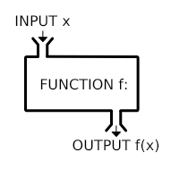
Obrázok 2.1: Funkcia.
Zadefinujeme si funkciu nasledovne.
Čo bude výsledkom myFunction(2,3) a myFunction(2,3,4) ?
2.4 for cyklus
Nasledujúci kód sčíta všetky čísla od 1 po 1000
## [1] 500500Index iNumber prechádza, cez všetky čísla vo vektore 1:1000 a vykoná všetky operácie, ktoré sú v kučeravých zátvorkách.
Podobne môžeme prechádzať cez vektor iných objektov ako je číslo. Tu budeme prechádzať cez vektor textov.
## [1] "Martin"
## [1] "Elena"
## [1] "Chryzogóm"
## [1] "Lucia"Rovnaký výstup dostaneme, ak budeme prechádzať cez indexy.
persons <- c("Martin", "Elena", "Chryzogóm", "Lucia")
for(iNumber in 1:4) {
print(persons[iNumber])
}## [1] "Martin"
## [1] "Elena"
## [1] "Chryzogóm"
## [1] "Lucia"2.5 Knižnice
Knižnice (libraries) sú kolekciou rôznych funkcií. Niektoré knižnice sú vytvorené priamo tvorcami R, ako napríklad base, iné nadšencami, ako napríklad causalweight. Ak chceme používať príkazy z nejakej knižnice, musíme ju mať nainštalovanú a musíme ju zavolať. Napríklad populárna knižnica ggplot2 slúži na tvorbu vizualizácií. Najprv musíte spustiť príkaz install.packages("ggplot2") a z online repozitára sa stiahne táto knižnica na Váš počítač.
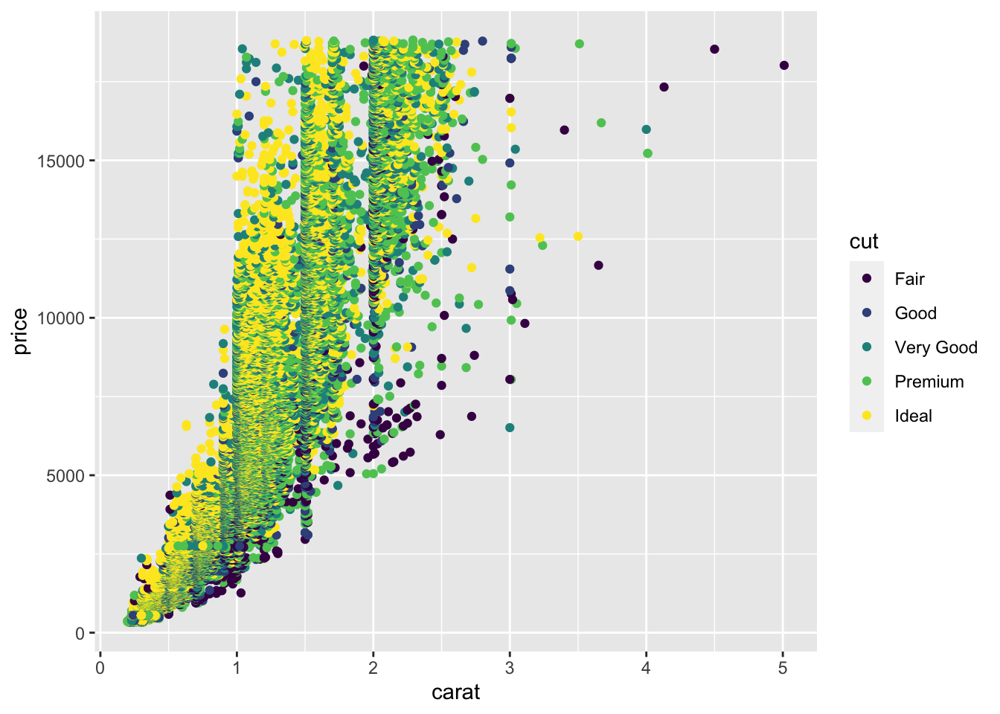
Ak do konzoly napíšeme?ggplot ukáže sa nám podrobná dokumentácia. Väčšina knižníc má svoju vignette, kde je nárornou formou stručne vysvetlená základná funkcionalita danej knižnice.
2.6 Štandardy
“Good coding style is like correct punctuation: you can manage without it, butitsuremakesthingseasiertoread.”
— Hadley Wickham
Je dobrou praxou písať pekný kód. Čo to znamená? Napríklad:
loadData.R- názov funkcie alebo skriptu - veľké písmeno na začiatku ďalšieho slova. Aleboload_data.R<-- priradenie. Používajte namiesto=- Nie je dobré písať príliš dlhé riadky.
getConvReel_11- dávajte zrozumiteľné názvy funkciám- vyvarujte sa dvojitím záporom, sú nezrozumiteľné
- okolo
=,+,-,<-nechávajte medzeru, nech sa to lepšie číta - píšte veľa komentárov (#najlepsie bez makcenov a dlznov) a odsadzujte slová
- píšte kód tak, aby ho vedel čítať niekto po vás s minimálnou námahou
Mnoho odporúčaní je tu: https://style.tidyverse.org a tu: https://google.github.io/styleguide/Rguide.html
2.7 Časté chyby
- Neporiadok v kóde - čítať neporiadny kód je bolesť. Niekedy je aj vlastný kód po pár mesiacoch úplne nečitateľný. Špeciálna bolesť je čítat cudzí neporiadny kód.
(0.1 + 0.2) == 0.3- treba si dávať pozor na to, ako počítač reprezentuje čísla.- zlé ozátvorkovanie - viacej zátvoriek je skoro vždy lepšie. Keď sa neviete rozhodnúť č’i pridať zátvorku, pridajte ju. Sú lacné.
- chýbajúca knižnica - je dobrou praxou na začiatku programu inicializovať všetky knižnice, ktoré sú potrebné na spustenie.
- nekompatibilné objekty - veľmi často sa robia operácie s nekompatibilnými objektami. Pokiaľ Rko neviem automaticky skonvertovať objekty na kompatibilné, tak vyhlási chybu. Niekedy je však horšie keď chybu ani nevyhlási, niečo urobí a chyba sa môže ukázať na úplne inom mieste.
2.8 Demonštrácia v R
Na začiatku musíme načítať knižnice, ktoré budeme potrebovať. Nejaké môžeme načítať aj neskôr,
#This package contains the datasets used in ISwR book
library(ISwR)
#load the package "survival"
#you may need to install it first
#install.packages("survival")
library(survival)Do premennej pridáme hodnotu použitím ->. Rko automaticky vyhodnotí o aký objekt ide. Objekt f bude typu numeric a objekt g bude typu character.
Môžeme sa mechanicky pozrieť, ktoré premenné máme v pamäti (funkcia ls()). Vymazať všetko v pamäti môžeme pomocou rm(list=ls()).
## [1] "carColors" "f" "fcarColors" "fpain" "g"
## [6] "height" "ind" "iNumber" "iPerson" "myfunction"
## [11] "pain" "persons" "x" "y" "z"Ak chceme pridať všetky premenné z nejakej dátovej tabuľky, použijeme attach().
## blood.glucose short.velocity
## 1 15.3 1.76
## 2 10.8 1.34
## 3 8.1 1.27
## 4 19.5 1.47
## 5 7.2 1.27
## 6 5.3 1.49
## 7 9.3 1.31
## 8 11.1 1.09
## 9 7.5 1.18
## 10 12.2 1.22
## 11 6.7 1.25
## 12 5.2 1.19
## 13 19.0 1.95
## 14 15.1 1.28
## 15 6.7 1.52
## 16 8.6 NA
## 17 4.2 1.12
## 18 10.3 1.37
## 19 12.5 1.19
## 20 16.1 1.05
## 21 13.3 1.32
## 22 4.9 1.03
## 23 8.8 1.12
## 24 9.5 1.70## [1] 15.3 10.8 8.1 19.5 7.2 5.3 9.3 11.1 7.5 12.2 6.7 5.2 19.0 15.1 6.7
## [16] 8.6 4.2 10.3 12.5 16.1 13.3 4.9 8.8 9.5## [1] 15.3 10.8 8.1 19.5 7.2 5.3 9.3 11.1 7.5 12.2 6.7 5.2 19.0 15.1 6.7
## [16] 8.6 4.2 10.3 12.5 16.1 13.3 4.9 8.8 9.5Takýmto spôsobom zadefinujeme novú funkciu.
## [1] 8## [1] 10Funkcie môžeme mať v rámci skriptu alebo ako separátne súbory typu subor.R. Pomocou setwd() nastavíme working directory. Ak chcete vedieť v ktorom adresári ste, použite getwd().
setwd("/Users/lukaslaffers/Dropbox/pravdepodobnost a statistika 2/ISwR/scripts")
source("myfunction2.R")
myfunction2(1,2,4)Tu sú rôzne spôsoby ako vykresiť závislosť dvoch premenných. Funkcia with(table,fun) vyhodnotí fun na dátovej tabuľke table.
## The following objects are masked from thuesen (pos = 3):
##
## blood.glucose, short.velocity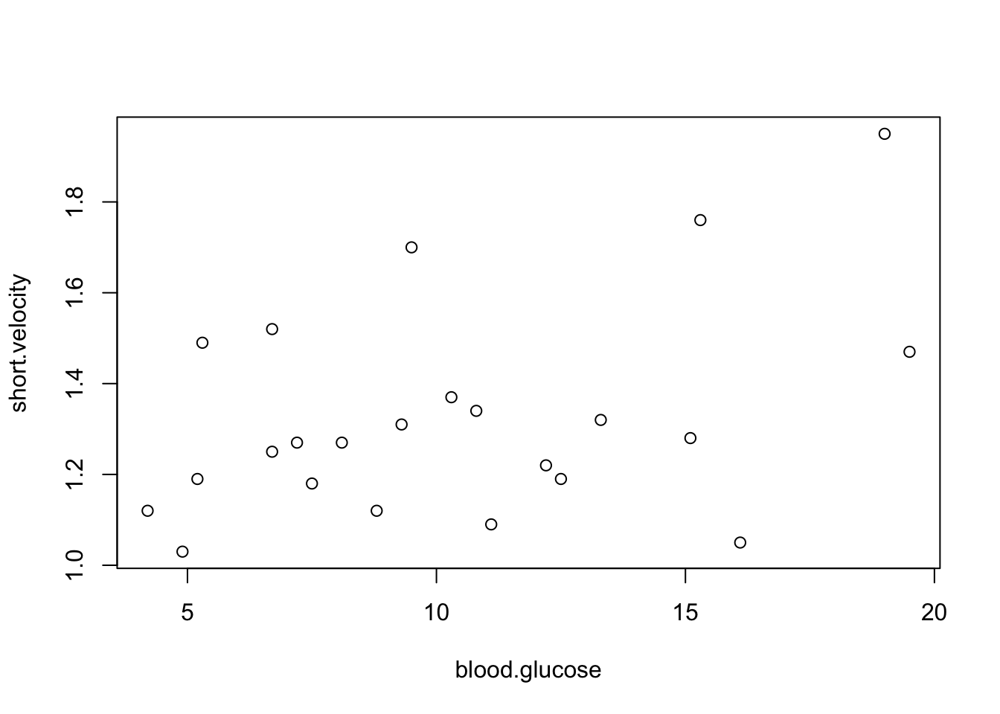
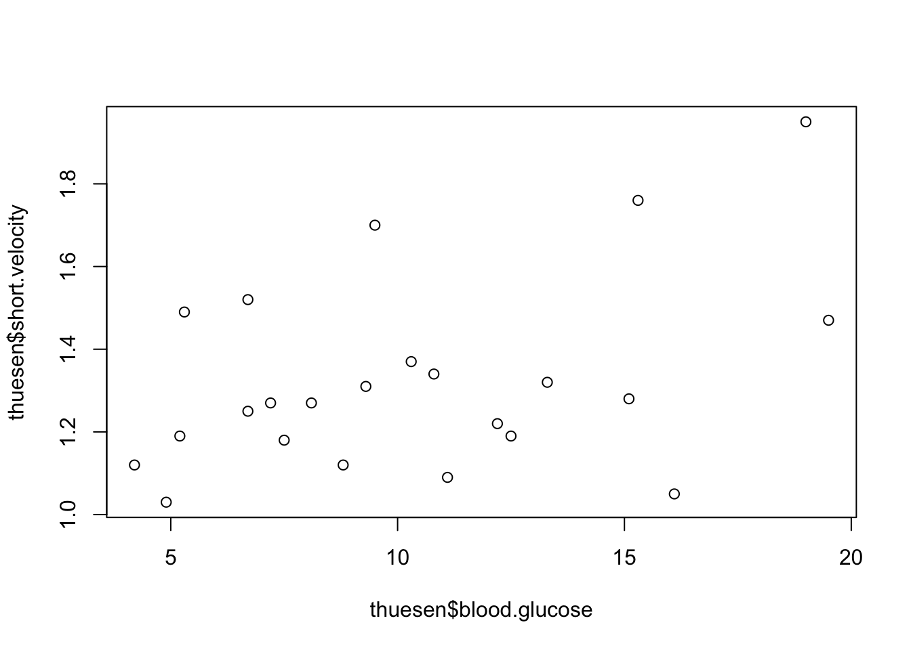

subset umožnuje vytvoriť podmnožinu dátovej tabuľky.
## blood.glucose short.velocity
## 6 5.3 1.49
## 11 6.7 1.25
## 12 5.2 1.19
## 15 6.7 1.52
## 17 4.2 1.12
## 22 4.9 1.03Pomocou setwd() vieme pridať ďalšiu premennú do dátovej tabuľky, napríklad transformovaním existujúcich premenných.
## blood.glucose short.velocity log.gluc
## 1 15.3 1.76 2.727853
## 2 10.8 1.34 2.379546
## 3 8.1 1.27 2.091864
## 4 19.5 1.47 2.970414
## 5 7.2 1.27 1.974081
## 6 5.3 1.49 1.667707
## 7 9.3 1.31 2.230014
## 8 11.1 1.09 2.406945
## 9 7.5 1.18 2.014903
## 10 12.2 1.22 2.501436
## 11 6.7 1.25 1.902108
## 12 5.2 1.19 1.648659
## 13 19.0 1.95 2.944439
## 14 15.1 1.28 2.714695
## 15 6.7 1.52 1.902108
## 16 8.6 NA 2.151762
## 17 4.2 1.12 1.435085
## 18 10.3 1.37 2.332144
## 19 12.5 1.19 2.525729
## 20 16.1 1.05 2.778819
## 21 13.3 1.32 2.587764
## 22 4.9 1.03 1.589235
## 23 8.8 1.12 2.174752
## 24 9.5 1.70 2.251292Podobne within() modifikuje dátovú tabuľku (narozdiel of with(), ktorá len vytvorí nový objekt).
thue4 <- within(thuesen,{
log.gluc <- log(blood.glucose)
m <- mean(log.gluc)
centered.log.gluc <- log.gluc - m
rm(m)
})
thue4## blood.glucose short.velocity centered.log.gluc log.gluc
## 1 15.3 1.76 0.481879807 2.727853
## 2 10.8 1.34 0.133573113 2.379546
## 3 8.1 1.27 -0.154108960 2.091864
## 4 19.5 1.47 0.724441444 2.970414
## 5 7.2 1.27 -0.271891996 1.974081
## 6 5.3 1.49 -0.578266201 1.667707
## 7 9.3 1.31 -0.015958621 2.230014
## 8 11.1 1.09 0.160972087 2.406945
## 9 7.5 1.18 -0.231070001 2.014903
## 10 12.2 1.22 0.255462930 2.501436
## 11 6.7 1.25 -0.343865495 1.902108
## 12 5.2 1.19 -0.597314396 1.648659
## 13 19.0 1.95 0.698465958 2.944439
## 14 15.1 1.28 0.468721722 2.714695
## 15 6.7 1.52 -0.343865495 1.902108
## 16 8.6 NA -0.094210818 2.151762
## 17 4.2 1.12 -0.810888496 1.435085
## 18 10.3 1.37 0.086170874 2.332144
## 19 12.5 1.19 0.279755623 2.525729
## 20 16.1 1.05 0.532846250 2.778819
## 21 13.3 1.32 0.341791014 2.587764
## 22 4.9 1.03 -0.656737817 1.589235
## 23 8.8 1.12 -0.071221300 2.174752
## 24 9.5 1.70 0.005318777 2.251292Pri generovaní náhodných čísel (runif() generuje náhodné čísla rovnomerne medzi 0 a 1) je dobrým zvykom nastaviť seed generátora (pseudo)náhodných čísel. Takýmto spôsobom dostaneme všetci úplne totožné výsledky.
Nakreslíme a modifikujeme graf. Tu vidíme, že vyskúšaním hneď pochopíte, čo daná funkcia robí bez toho, aby ste čítali dokumentáciu.
plot(x, y, main="Titulok", sub="subtitle",
xlab="x-label", ylab="y-label")
text(0.6,0.6,"text at (0.6,0.6)")
abline(h=.6,v=.6)
for (side in 1:4){
mtext(-1:4,side=side,at=.7,line=-1:4)
}
mtext(paste("side",1:4), side=1:4, line=-1,font=2)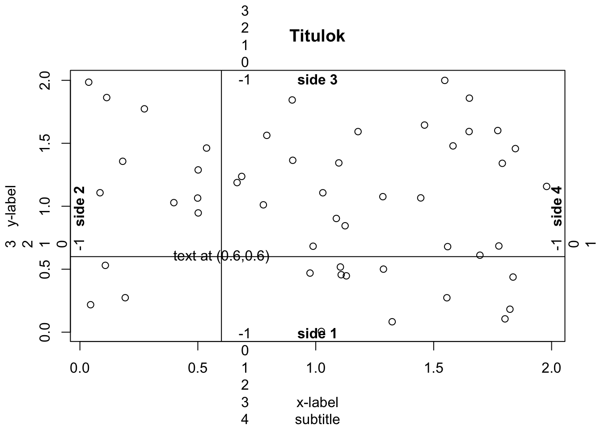
Podobne tu.
#empty figure
plot(x, y, type="n", xlab="", ylab="", axes=F)
#add elements one by one
#points
points(x,y)
axis(1)
axis(2,at=seq(0.2,1.8,0.2))
box()
title(main="Main title", sub="subtitle",
xlab="x-label", ylab="y-label")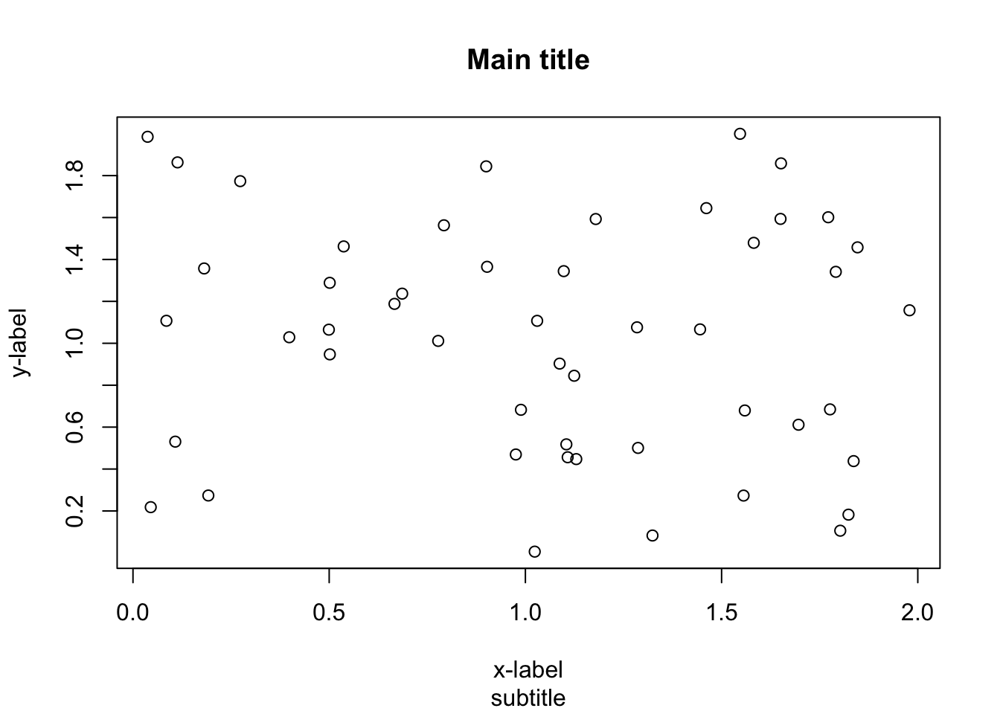
Tu sú rôzne varianty zobrazenia distribúcie
#in order to reproduce the graph exactly
# we need to fix the seed of the random number generator
set.seed(1234) #make it happen....
x <- rnorm(100000)
hist(x)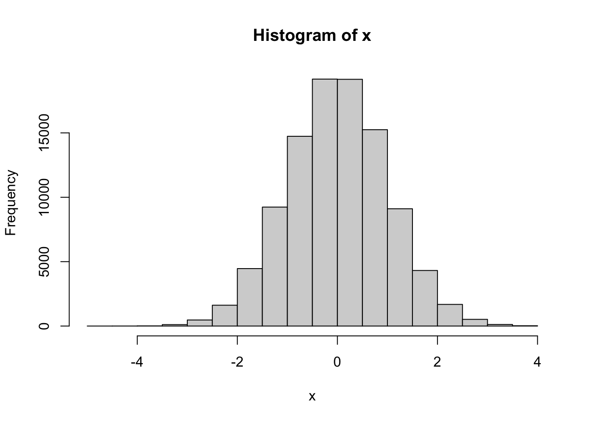
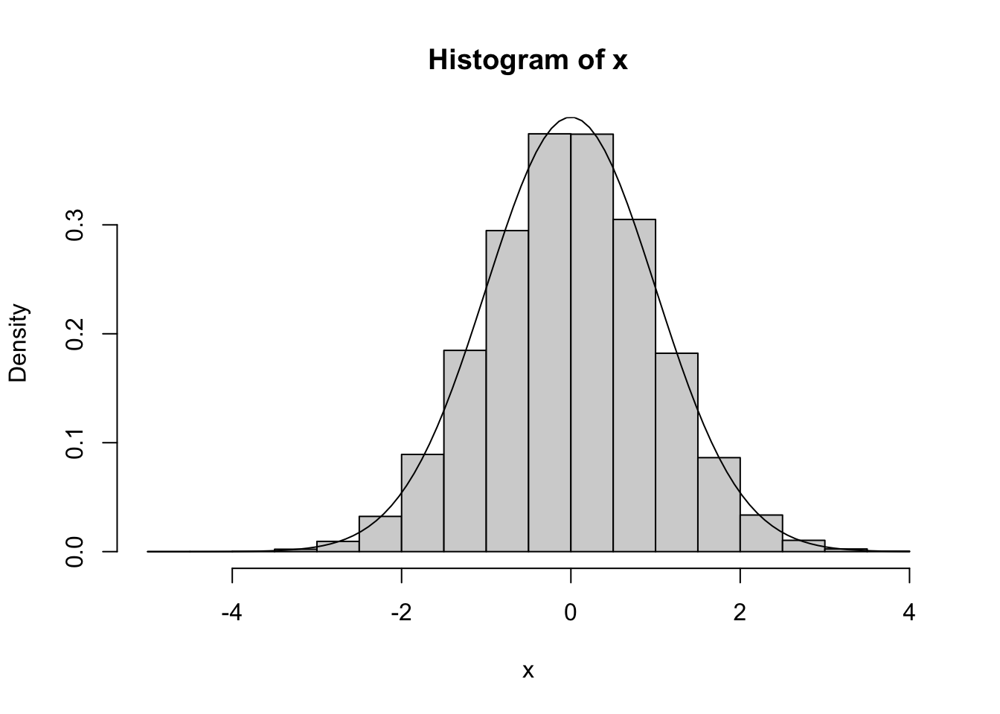
h <- hist(x, plot=F)
ylim <- range(0, h$density, dnorm(0))
hist(x, freq=F, ylim=ylim)
curve(dnorm(x), add=T) 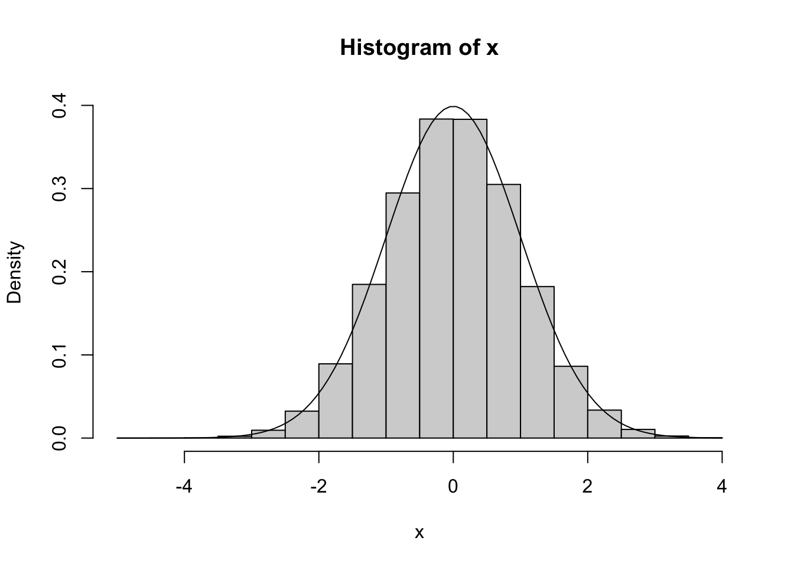
hist.with.normal <- function(x, xlab=deparse(substitute(x)),...)
{
h <- hist(x, plot=F, ...)
s <- sd(x)
m <- mean(x)
ylim <- range(0,h$density,dnorm(0,sd=s))
hist(x, freq=F, ylim=ylim, xlab=xlab, ...)
curve(dnorm(x,m,s), add=T)
}
a <- rnorm(100000)
hist.with.normal(a)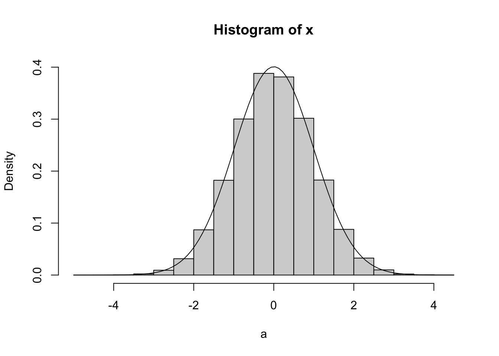
Naćítanie dát z tabuľky je zvyčajne prvým krokom akejkoľvek analýzy. Dáta prichádzajú v rôznych formách. Tu je zopár príkladov ako načítať dáta z rôznych typov súborov. Dôležité je, aby v adresári v ktorom sa nachádzame daný súbor aj naozaj bol.
######################################
#This part is not taken from ISwR book
######################################
#There are many different ways how can we load data to R
# and many different formats of the data
# Here we cover some of them:
# xlsx
# csv
# dat
# txt
# remember to set the current directory using setwd()
# You may check it using this command
getwd()## [1] "/Users/lukaslaffers/Library/CloudStorage/Dropbox/pravdepodobnost a statistika 2/PaS2bookdown"Na otvorenie typu xlsx potrebujeme načítať novú knižnicu. Sú rôzne knižnice, ktoré toto vedia.
#working with datasets
data_card <- read_xlsx("card.xlsx")
# Data downloaded from https://davidcard.berkeley.edu/data_sets.html
# from paper:
# "Using Geographic Variation in College Proximity to Estimate the Return to Schooling".
# In L.N. Christofides, E.K. Grant, and R. Swidinsky, editors, Aspects of Labor Market
# Behaviour: Essays in Honour of John Vanderkamp. Toronto: University of Toronto Press, 1995.
# Data also here: https://docs.google.com/spreadsheets/d/116KwP9SJUQ8LZHeIH-sTvlFFwCgkKIsz86exk1I7O1s/edit#gid=943363882CSV súbor je častokrát preferovaný, lebo jeho forma nezávisí na verzii MS Excel.
Ďalších častým formátom je .dat.
#we may save the dataset to a ".dat"
save(data_card, file="card.dat")
#then load it using load
load("card.dat")Natívne podporovaný formát je .RData.
#we may save the dataset to a ".RData"
save(data_card, file="card.RData")
#then load it using load
load("card.RData")Bežným je tiež .txt formát.
Súbor, ktorý sťahujeme môže byť aj na internete.
#sometime the dataset is on the internet
data_card <- read.table("https://lukas-laffers.squarespace.com/s/card.txt")Alebo v nejakej konkrétnej Rkovej knižnici.
Vždy sa pozeráme na sumár datasetu. Ten nás informuje o formátoch a charakteristikách jednotlivých premenných.
## id nearc2 nearc4 nearc4a
## Min. : 2 Min. :0.0000 Min. :0.0000 Min. :0.0000
## 1st Qu.:1330 1st Qu.:0.0000 1st Qu.:0.0000 1st Qu.:0.0000
## Median :2574 Median :0.0000 Median :1.0000 Median :0.0000
## Mean :2610 Mean :0.4318 Mean :0.6781 Mean :0.4921
## 3rd Qu.:3908 3rd Qu.:1.0000 3rd Qu.:1.0000 3rd Qu.:1.0000
## Max. :5225 Max. :1.0000 Max. :1.0000 Max. :1.0000
## nearc4b ed76 ed66 age76
## Min. :0.000 Min. : 0.00 Min. : 0.00 Min. :24.00
## 1st Qu.:0.000 1st Qu.:12.00 1st Qu.: 9.00 1st Qu.:25.00
## Median :0.000 Median :13.00 Median :11.00 Median :28.00
## Mean :0.186 Mean :13.23 Mean :10.74 Mean :28.18
## 3rd Qu.:0.000 3rd Qu.:16.00 3rd Qu.:12.00 3rd Qu.:31.00
## Max. :1.000 Max. :18.00 Max. :18.00 Max. :34.00
## daded nodaded momed nomomed
## Min. : 0.00 Min. :0.0000 Min. : 0.00 Min. :0.0000
## 1st Qu.: 8.00 1st Qu.:0.0000 1st Qu.: 8.00 1st Qu.:0.0000
## Median : 9.94 Median :0.0000 Median :11.00 Median :0.0000
## Mean :10.00 Mean :0.2242 Mean :10.34 Mean :0.1143
## 3rd Qu.:12.00 3rd Qu.:0.0000 3rd Qu.:12.00 3rd Qu.:0.0000
## Max. :18.00 Max. :1.0000 Max. :18.00 Max. :1.0000
## weight momdad14 sinmom14 step14
## Min. : 75607 Min. :0.0000 Min. :0.0000 Min. :0.00000
## 1st Qu.: 123030 1st Qu.:1.0000 1st Qu.:0.0000 1st Qu.:0.00000
## Median : 365200 Median :1.0000 Median :0.0000 Median :0.00000
## Mean : 320318 Mean :0.7921 Mean :0.1002 Mean :0.03847
## 3rd Qu.: 405452 3rd Qu.:1.0000 3rd Qu.:0.0000 3rd Qu.:0.00000
## Max. :1752340 Max. :1.0000 Max. :1.0000 Max. :1.00000
## reg661 reg662 reg663 reg664
## Min. :0.00000 Min. :0.000 Min. :0.000 Min. :0.00000
## 1st Qu.:0.00000 1st Qu.:0.000 1st Qu.:0.000 1st Qu.:0.00000
## Median :0.00000 Median :0.000 Median :0.000 Median :0.00000
## Mean :0.04456 Mean :0.155 Mean :0.194 Mean :0.06919
## 3rd Qu.:0.00000 3rd Qu.:0.000 3rd Qu.:0.000 3rd Qu.:0.00000
## Max. :1.00000 Max. :1.000 Max. :1.000 Max. :1.00000
## reg665 reg666 reg667 reg668
## Min. :0.0000 Min. :0.000 Min. :0.0000 Min. :0.000
## 1st Qu.:0.0000 1st Qu.:0.000 1st Qu.:0.0000 1st Qu.:0.000
## Median :0.0000 Median :0.000 Median :0.0000 Median :0.000
## Mean :0.2095 Mean :0.093 Mean :0.1102 Mean :0.031
## 3rd Qu.:0.0000 3rd Qu.:0.000 3rd Qu.:0.0000 3rd Qu.:0.000
## Max. :1.0000 Max. :1.000 Max. :1.0000 Max. :1.000
## reg669 south66 work76 work78
## Min. :0.00000 Min. :0.0000 Min. :0.000 Min. :0.0000
## 1st Qu.:0.00000 1st Qu.:0.0000 1st Qu.:1.000 1st Qu.:0.0000
## Median :0.00000 Median :0.0000 Median :1.000 Median :1.0000
## Mean :0.09355 Mean :0.4127 Mean :0.835 Mean :0.7351
## 3rd Qu.:0.00000 3rd Qu.:1.0000 3rd Qu.:1.000 3rd Qu.:1.0000
## Max. :1.00000 Max. :1.0000 Max. :1.000 Max. :1.0000
## lwage76 lwage78 famed black
## Length:3613 Length:3613 Min. :1.000 Min. :0.00
## Class :character Class :character 1st Qu.:3.000 1st Qu.:0.00
## Mode :character Mode :character Median :6.000 Median :0.00
## Mean :5.913 Mean :0.23
## 3rd Qu.:8.000 3rd Qu.:0.00
## Max. :9.000 Max. :1.00
## smsa76r smsa78r reg76r reg78r
## Min. :0.0000 Length:3613 Min. :0.0000 Length:3613
## 1st Qu.:0.0000 Class :character 1st Qu.:0.0000 Class :character
## Median :1.0000 Mode :character Median :0.0000 Mode :character
## Mean :0.6947 Mean :0.3997
## 3rd Qu.:1.0000 3rd Qu.:1.0000
## Max. :1.0000 Max. :1.0000
## reg80r smsa66r wage76 wage78
## Length:3613 Min. :0.0000 Length:3613 Length:3613
## Class :character 1st Qu.:0.0000 Class :character Class :character
## Mode :character Median :1.0000 Mode :character Mode :character
## Mean :0.6427
## 3rd Qu.:1.0000
## Max. :1.0000
## wage80 noint78 noint80 enroll76
## Length:3613 Min. :0.00000 Min. :0.0000 Min. :0.00000
## Class :character 1st Qu.:0.00000 1st Qu.:0.0000 1st Qu.:0.00000
## Mode :character Median :0.00000 Median :0.0000 Median :0.00000
## Mean :0.08137 Mean :0.1068 Mean :0.09466
## 3rd Qu.:0.00000 3rd Qu.:0.0000 3rd Qu.:0.00000
## Max. :1.00000 Max. :1.0000 Max. :1.00000
## enroll78 enroll80 kww iq
## Length:3613 Length:3613 Length:3613 Length:3613
## Class :character Class :character Class :character Class :character
## Mode :character Mode :character Mode :character Mode :character
##
##
##
## marsta76 marsta78 marsta80 libcrd14
## Length:3613 Length:3613 Length:3613 Length:3613
## Class :character Class :character Class :character Class :character
## Mode :character Mode :character Mode :character Mode :character
##
##
## Vśimneme si, že premenná je typu faktor.
## [1] "." "93" "103" "88" "108"Vieme ju skonvertovať na numerickú premennú tak, že ju najprv skonvertujeme na text.
## Warning: NAs introduced by coercion## Warning: NAs introduced by coercionA nakresliť.
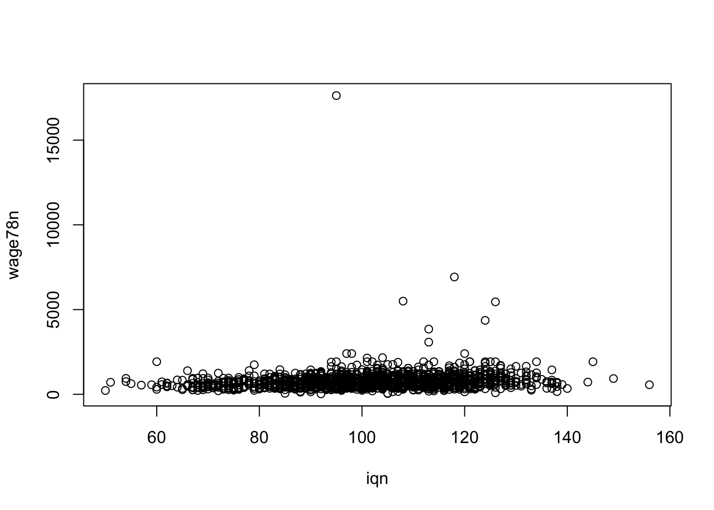
Rovnako nakreslíme závislosť IQ a mzdy pre tých, ktorý zarábajú menej ako 2000.
library(tidyverse)
#zoom for those who earned less than 2000
with(data_card %>% filter(wage78n<2000),plot(iqn,wage78n))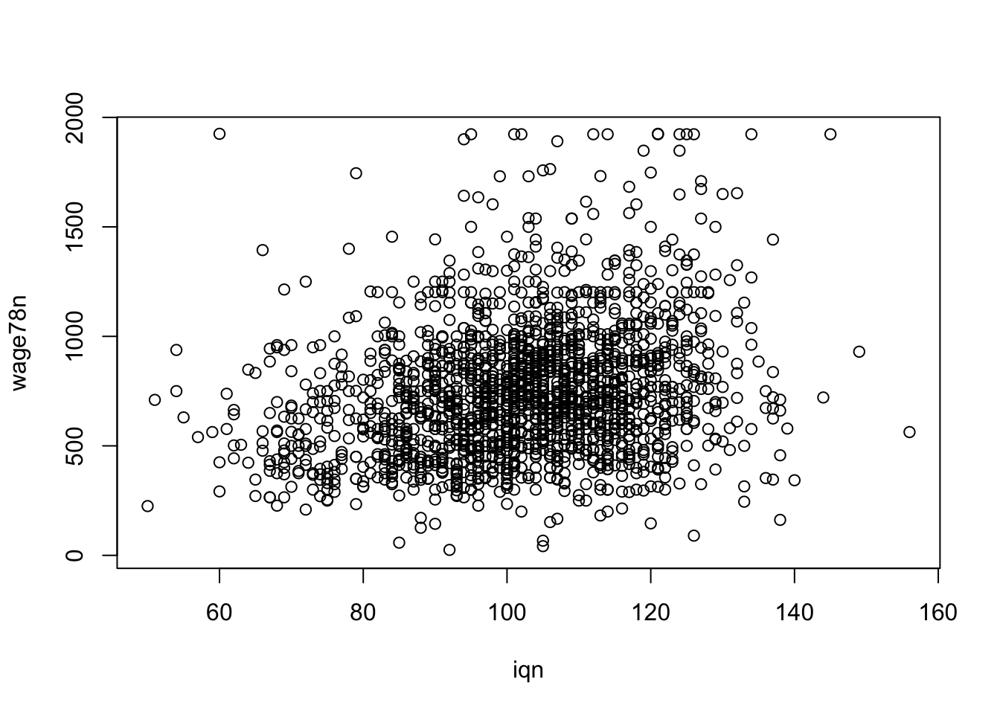
Kreslenie obrázkov a vizualizácia je zaujímavá kapitola sama o sebe.
#or more fancy graph
ggplot(data=data_card %>% filter(wage78n<2000), aes(x = iqn, y = wage78n)) +
geom_point() +
geom_smooth(method="lm", formula = y ~ x) +
geom_smooth(method="lm", formula = y ~ x + I(x^2), col="red")## Warning: Removed 817 rows containing non-finite values (`stat_smooth()`).
## Removed 817 rows containing non-finite values (`stat_smooth()`).## Warning: Removed 817 rows containing missing values (`geom_point()`).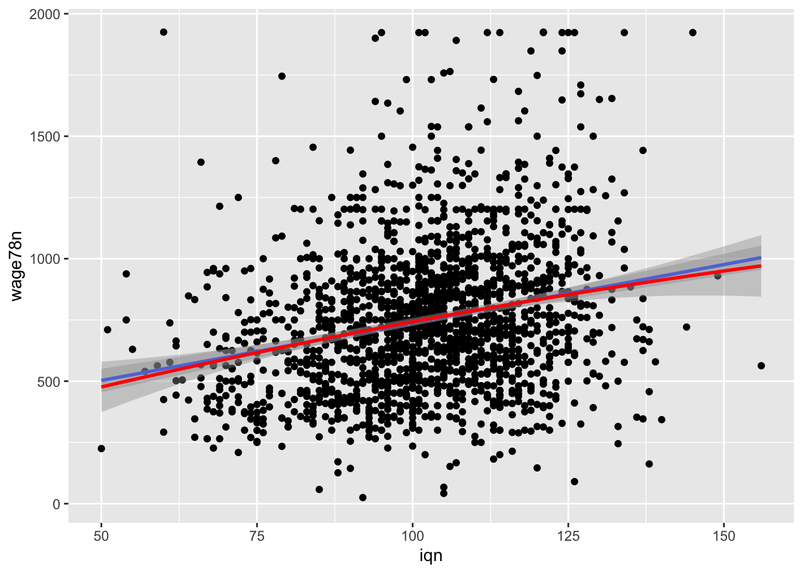
2.9 Cvičenia
Cvičenie 2.1 Vráťme sa k príkladu
Podrobne vysvetlite, prečo height[ind1] a height[ind2] nedáva ten istý výstup.
Cvičenie 2.3 Poďme naspäť k cvičeniu 1.3 o filmoch.
Aký je rozpočet akčných filmov, vydaných po 1995?
Tu je pomôcka. Sú tu 4 rôzne spôsoby ako sa to dá robiť. Líšia sa najmä prehľadnosťou zápisu. Prehľadnejší kód znamená menší priestor pre chyby.
Spôsob 1. Indexovaním. Indexy si uchovávame:
#option 1
ind <- movies$year > 1995 & movies$Action==1
#look at column called "budget"
movies[ind,"budget"]
#or
# "budget" is in the 4th column
names(movies)
#look at the fourth column
movies[ind,4]Spôsob 2. Priamo indexovaním.
#option 2 directly (less readable)
movies[movies$year > 1995 & movies$Action==1,"budget"]
movies[movies$year > 1995 & movies$Action==1,4]Spôsob 3. Pomocou funkcie with().
#option 3 nicer
# use function with, takes dataset as the first argument
with(movies, budget[year > 1995 & Action==1])Spôsob 4. Pomocou knižnice dplyr
#option 4 much nicer (use dplyr package)
movies %>%
filter(year > 1995, Action==1) %>%
select(budget)Všimnite si, že posledný kód je oveľa čitateľnejší.
Teraz splňte nasledovnú úlohu:
Usporiadajte animované filmy s viac ako 1000 hodnoteniami, vydané po roku 1980, ktoré trvajú dlhšie ako 30 minút podľa hodnotenia od najlepšieho po najhorší.
(Možno použiť funkcie filter(), arrange() a desc().)
Cvičenie 2.4 Vytvorte funkciu s menom bmi, ktorá dostane ako vstup výšku v cm a váhu v kg a jej výstupom bude BMI. Môžete uvažovať, že vstupy sú korektne zadané.
Cvičenie 2.5 Pomocou for cyklu zrátajte
\[\begin{equation*} \sum_{i=1}^{350}\frac{i(i-1)}{i+2} \end{equation*}\]
a
\[\begin{equation*} \prod_{i=1}^{350}\frac{i+1}{i+2} \end{equation*}\]
Cvičenie 2.6 Stiahnite si a načítajte dáta o kvalite červených vín.
stadiaľto. Porozmýšľajte ako sú rôzne atribúty červeného vína asociované s jeho kvalitou (quality).
Cvičenie 2.7 Stiahnite si a načítajte dáta o výkone študentov na rôznych testoch.
stadiaľto. Porozmýšľajte ako je vzdelanie rodičov asociované s akademickým výkonom v rôznych oblastiach (math.score, reading.score, writing.score).